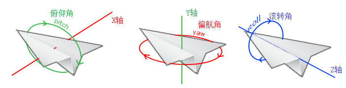
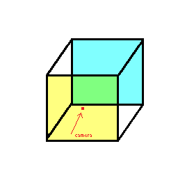
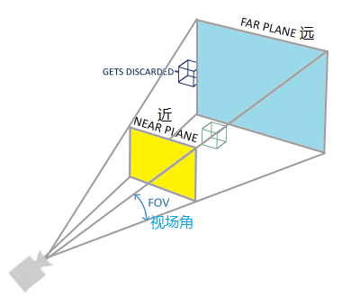
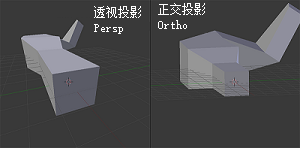
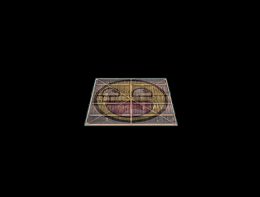

trans_t 生成的矩阵，即模型(Model)矩阵，即可很方便地表示物体的位置、旋转和缩放。
sd.setm4("model",tr.matr());
gl_Position=model*vec;
camera_t cam(vec3 位置,float 偏航角_角度制=-90.0f,俯仰角=0.0f,滚转角=0.0f);
camera_t(float 位置X,Y,Z,float 偏航角=-90.0f,float 俯仰角=0.0f,float 滚转角=0.0f);


通过以下函数计算这个矩阵：ortho(float 左,右,下,上,近,远);
persp(视场角_推荐45.0f,gl.w_div_h(),近,远);


接下来，我们就可以计算得出最终的向量了：uniform mat4 model;
uniform mat4 view;
uniform mat4 proj;
gl_Position=proj*view*model*vec4(v_pos.x,v_pos.y,v_pos.z,1.0);
这三个矩阵，合称 MVP 矩阵。
trans_t tr;
然后绕 X轴旋转 -55°：
tr.rot(vec3(1.0f,0.0f,0.0f),-55.0f);
之后创建摄像机，位置向后移动 3.0f：
camera_t cam(0.0f,0.0f,3.0f);
定义投影矩阵，视场角设置为摄像机视场角：
mat4 proj=persp(cam.fov,gl.w_div_h(),0.1f,100.0f);
像上面那样改一下着色器并传入三矩阵：
uniform mat4 model;
uniform mat4 view;
uniform mat4 proj;
gl_Position=proj*view*model*vec4(v_pos.x,v_pos.y,v_pos.z,1.0);
sd.setm4("model",tr.matr());
sd.setm4("view",cam.view());
sd.setm4("proj",proj);
eg1。

mesh_buf_t mb("res/cube.ve","res/cube.in",gle.draw_never_chg);
我们的新数据里的正方体有 12 个三角形，因此还要修改绘制三角形的代码：
gl.triangle(0,12);
由于数据的改变（删除了顶点颜色属性），我们还要修改着色器，删除多余的layout和uniform。
timer_t tim;
每帧更新：tim.upd();
设置旋转角度：tr.rot(vec3(0.5f,1.0f,0.0f),50.0f*tim.cur);
最后的效果有点奇怪：有的时候后面的面会挡住前面的面。之所以这样是因为OpenGL是一个三角形一个三角形地来绘制你的立方体的，所以即便之前那里有东西它也会覆盖之前的像素。gl.dept(bool 是否启用);
当然，细心的人可能会注意到，我们的箱子有些透明。这是由于我们对不透明度的计算有些问题。有两种解决方案：gl.blend(bool 是否启用);
vec3 cube_pos[] = {
vec3( 0.0f, 0.0f, 0.0f),
vec3( 2.0f, 5.0f, -15.0f),
vec3(-1.5f, -2.2f, -2.5f),
vec3(-3.8f, -2.0f, -12.3f),
vec3( 2.4f, -0.4f, -3.5f),
vec3(-1.7f, 3.0f, -7.5f),
vec3( 1.3f, -2.0f, -2.5f),
vec3( 1.5f, 2.0f, -2.5f),
vec3( 1.5f, 0.2f, -1.5f),
vec3(-1.3f, 1.0f, -1.5f)
};
那么，我们就要把画正方体的代码放在一个循环里了；因为每个正方体的位置不同，我们还要在画每个正方体前重新设定 model：
for(int i=0;i<10;i++){
tr.trans(cube_pos[i]);
sd.setm4("model",tr.matr());
gl.triangle(0,12);
}
如果你成功了，你可能会发现结果有些单调，所有正方体都是一个方向的。trans_t 是无法完成的，因为属性会被覆盖。因此，我们另外声明一个 trans_t ：
trans_t tr,tri;
根据编号设定旋转角度：
tri.rot(vec3(1.0f,0.3f,0.5f),i*20.0f);
修改 model ，先让正方体旋转到正确的角度，然后再把它移动、按时间旋转：
sd.setm4("model",tr.matr()*tri.matr());
eg3。gl_Position = proj * view * model * vec4(局部坐标, 1.0);